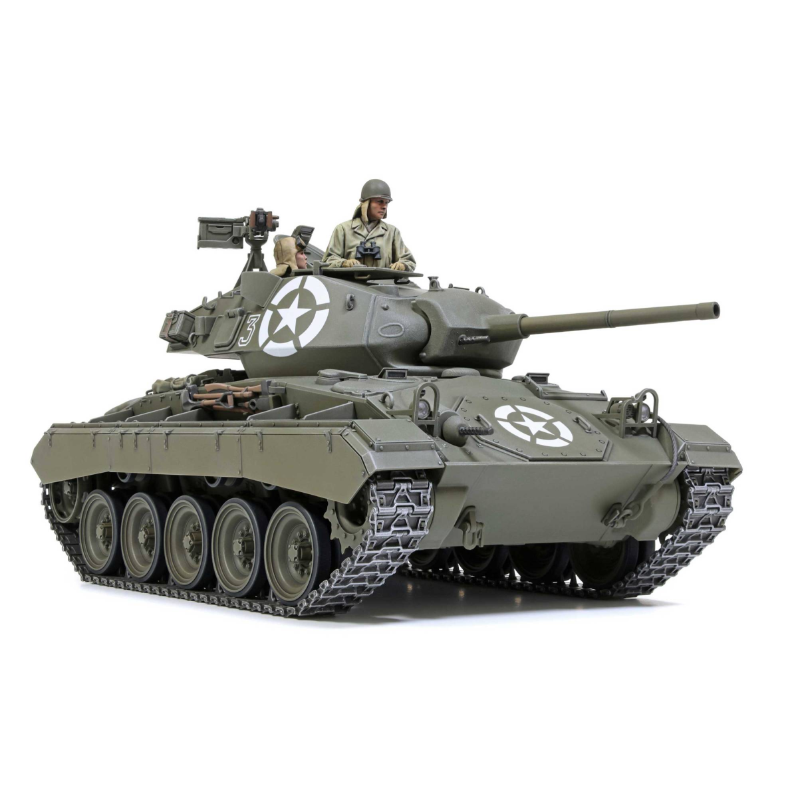

€35,95
De 1:35 Tamiya 35391 M24 Chaffee - European Theater WWII is een plastic modelbouwpakket van de M24 Chaffee zoals deze verscheen in het Europese strijdtoneel tijdens de Tweede Wereldoorlog. De Chaffee werd ontwikkeld als opvolger van de M3/M5 Stuart lichte tanks en werd in 1944 officieel in gebruik genomen. Met zijn lage profiel, schuine bepantsering, torsiestangvering en krachtige 75 mm hoofdbewapening groeide de M24 uit tot een opvallende lichte tank met veel karakter.
Kenmerken:
- Plastic modelbouwpakket in schaal 1:35 van de Tamiya 35391 M24 Chaffee European Theater WWII, een Amerikaanse lichte tank zoals ingezet in het Europese strijdtoneel tijdens de Tweede Wereldoorlog
- Modelafmetingen volgens input: lengte 159 mm en breedte 87 mm, met afbeelding die een gemonteerd en geschilderd model toont
- Construction Type Assembly Kit met decals inbegrepen, waarbij cement, verf en finishing supplies nodig zijn om het model te voltooien
- Realistische details zoals gun shield, gegoten oppervlaktestructuren op de voorzijde van de toren en lasnaden over het model zorgen voor een sterke en overtuigende afwerking
- Fender sand shield parts zijn inbegrepen als optie en het model kan ook worden gebouwd met de hull-side sand shields verwijderd
- Assembly type tracks met eendelige rechte secties en idler wheels die uit binnen- en buitenhelften bestaan voor extra detail zoals wielgaten aan de zijkant
- Photo-etched onderdeel geeft het rear panel rack een verfijnde afwerking, met onderdelen om het rek te vormen zonder dat instant cement nodig is
- Interieur bevat afzonderlijk gegoten onderdelen voor de main gun breech en transceiver, zichtbaar via het open luik voor extra modelbouwdiepte
- Clear parts worden gebruikt voor light lenses en cupola vision blocks, met zwarte decals om het effect na te bootsen waarbij glas vanuit bepaalde hoeken zwart lijkt
- Turret rear stowage box met afzonderlijk gegoten onderdelen, molded tow cable parts, details op de air intake cover, deck met kleine bouten en stijlvol weergegeven canvas covers
- Twee torsofiguren inbegrepen voor commander en loader, waarbij de loader is voorzien van clear goggle parts
- Drie markeringopties inbegrepen voor een M24 van de 1st Armored Division in Italy en twee voertuigen in Germany in 1945
Voeg een iconische tank uit de Tweede Wereldoorlog toe aan je verzameling met de 1:35 Tamiya 35391 M24 Chaffee - European Theater WWII.
Terug